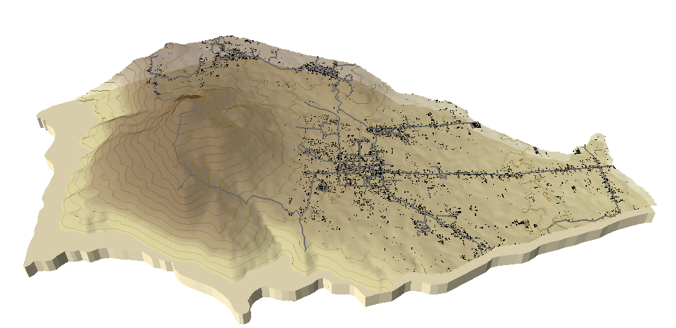

Geovisual Communication Challenge
by: aero09
Current local time in
Philippines
>
Location of Cuenca,Batangas
Terrain Visualization of Cuenca,Batangas
Data Source: SAR Phil-LiDAR

Vegetation Visualization of Cuenca,Batangas
Data Source: Derived from LANDSAT 8 OLI
Land Surface Temperature (LST) Visualization of Cuenca,Batangas
Data Source: Derived from LANDSAT 8 OLI
 >
>
>
>